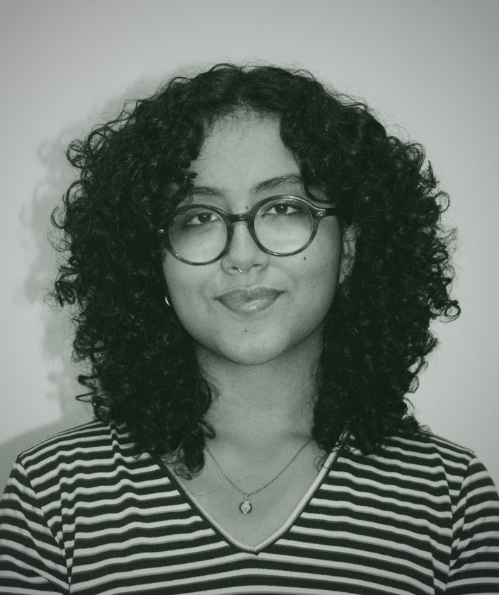

Olá, eu sou a Esther ;)
Ajudo a simplificar processos complexos e acelerar entregas com o apoio da IA.
Com experiência em UX Design desde os 16 anos e atualmente cursando Administração na UFRJ, construo ferramentas práticas e acessíveis para pesquisa e gestão da informação.

Projetos
Formação
Graduação, formação técnica e estudos complementares.
Experiência
Habilidades e ferramentas
Vamos conversar?
Estou aberta a conversar sobre projetos, pesquisa e oportunidades em gestão e inovação.